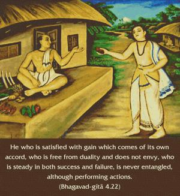
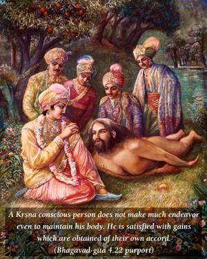
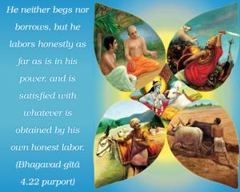
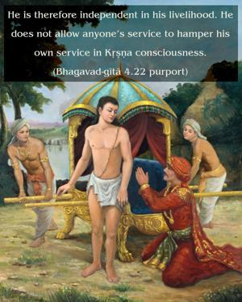

He who is satisfied with gain which comes of its own accord, who is free from duality and does not envy, who is steady in both success and failure, is never entangled, although performing actions.




A Kṛṣṇa conscious person does not make much endeavor even to maintain his body. He is satisfied with gains which are obtained of their own accord. He neither begs nor borrows, but he labors honestly as far as is in his power, and is satisfied with whatever is obtained by his own honest labor. He is therefore independent in his livelihood. He does not allow anyone’s service to hamper his own service in Kṛṣṇa consciousness. However, for the service of the Lord he can participate in any kind of action without being disturbed by the duality of the material world. The duality of the material world is felt in terms of heat and cold, or misery and happiness. A Kṛṣṇa conscious person is above duality because he does not hesitate to act in any way for the satisfaction of Kṛṣṇa. Therefore he is steady both in success and in failure. These signs are visible when one is fully in transcendental knowledge.